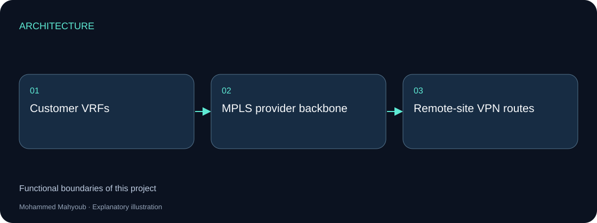
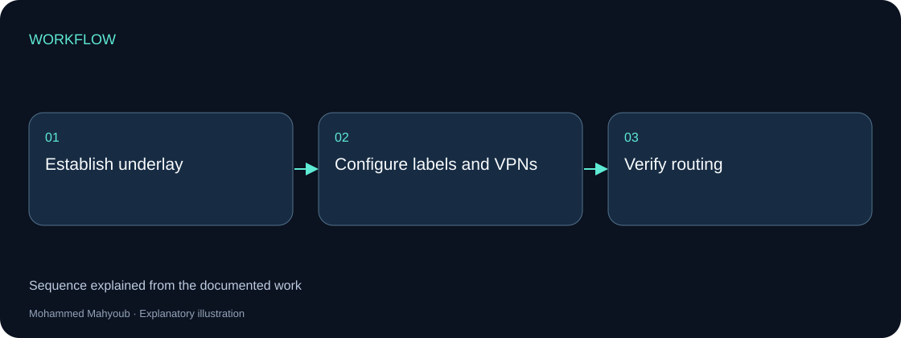
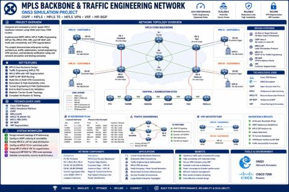

Service-provider Networks · MPLS
Network Infrastructure Design — MPLS Backbone
Built and validated a Cisco 7200 MPLS backbone in GNS3, using OSPF, MPLS traffic engineering, VRF/MPLS VPN and MP-BGP for multi-site connectivity.
Implemented Project
System architecture

Implementation scope
OSPF provides the routing underlay. MPLS carries labelled traffic, while VRFs separate customer routing contexts and MP-BGP exchanges VPN routes.
Engineering approach
The GNS3 topology is the source visual for this implementation. The explanatory diagram shows functional boundaries rather than inventing router names, addresses or measured throughput.

Visual documentation
Original project posters and interface screenshots are identified separately from explanatory source diagrams. The gallery documents this project only. Open any figure to inspect it at full available resolution.

